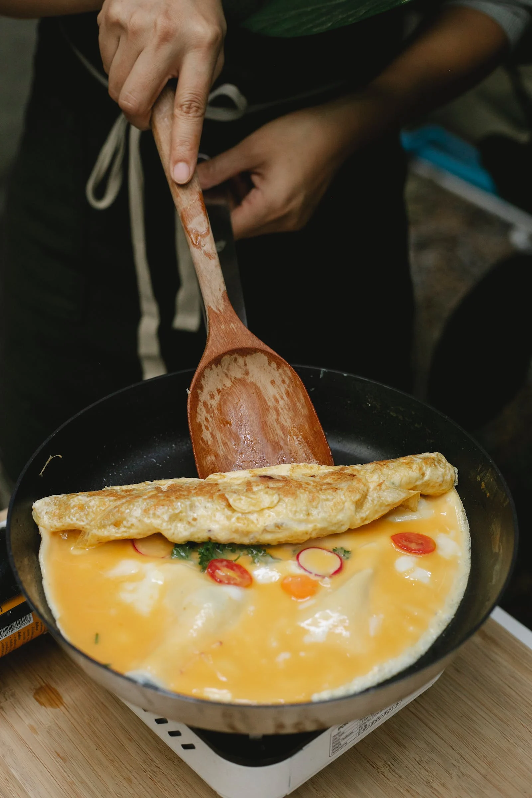

Omelette Overload

Spice up your morning with this overloaded Southwest style omelette!
Do you like steak, avocado, and pico de gallo? Why not have it all to start your day off!
This omelette is loaded with everything you didn't know you needed.
Packed full of protein and vegetables, you'll be satisfied even if lunch comes later than expected.
Ingredients
- 3 Beaten eggs
- Tablespoon of milk
- Half cup of steak strips
- Half of a sliced avocado
- Chopped onions
- 2-3 Chopped mushrooms
- 2-3 Chopped sweet peppers
- Half cup of shredded cheese
- Tablespoon of pico
- Juice from half lime
- 1 Tablespoon sour cream
- 1 Teaspoon ranch powder
- Half teaspoon chili powder
- 1 Clove minced garlic
- Half tablespoon olive oil
Steps
- Mix sour cream, lime juice, ranch powder, and chili powder together
- Add olive oil to skillet at medium-high heat
- Add mushrooms, onions, peppers and the minced garlic to the oil
- Add the 3 beaten eggs to the skillet
- Once the egg is slightly firm, add cheese and steak to one half
- Fold other half of egg over the cheese and steak
- (Optional) Sprinkle cheese on top
- Add sliced avocado, pico, and chili lime ranch on top